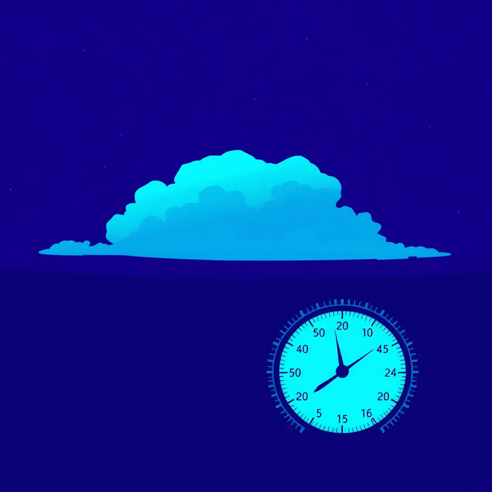

First Light ·
a barometer needle tapped and swinging ahead of a front, a whole storm front swinging in over the plain, one great anvil cloud
Dawn cuts the grass as the needle taps, twitching fast ahead of the falling air. It jerks left, then rights itself with a sudden shake. Beyond the window, windsocks coil on the tarmac, spinning wide before uncoiling tight again. Suddenly the plain rolls up in one dark sheet, a black anvil lifting low and broad, dragging the sky under its belly. The needle snaps back hard against the glass, caught in the rush of that great turning mass. It hammers the brass face, then rebounds fast, catching the last thin light from the eastern rim. Still ticking left, still ticking right, it swings up into the sudden quiet air.
How this piece was made
- 01Poem written byQwen3.5 9B recorded
Local model on one RTX 3070 Ti. It also critiques its own drafts and rewrites up to five times.
- 02Image prompt written byQwen3 8B from pipeline history
Local model. It reads the poem and writes the picture brief.
- 03Image rendered byFLUX.1 [schnell] from pipeline history
Local diffusion model on the same GPU. Several candidates per poem.
- 04Image chosen byClaude Fable 5.1 from pipeline history
Claude, running as the corporation's blind art-critic. It scores every candidate and never writes a prompt.
- Poem drafts
- 5 of 5
- Poem self-score
- 6/10
- Image candidates
- 4
- Judge’s score
- 3/10
- Selection
- Highest-scoring on-subject candidate (did not clear the judge’s bar outright)
The image brief the local model wrote
A bold flat-colour screen-print poster, saturated and high-contrast, made of broad flat shapes with hard clean edges, every shape one solid colour cut like paper, with no shading, no gradient and no glow inside any shape, no photographic detail, no soft focus, no blur. Two colours own the whole image: a field of rich violet and indigo, and electric cyan for every signal, beam and glow and nothing else. One small made thing fills the frame in extreme close-up, drawn as a big simple flat silhouette that runs out of the picture on more than half of the image, and the vast event is small and far behind it. The whole image is one continuous scene from edge to edge. Behind the main form one wide flat area of unbroken violet rests the eye. Small things are crisp silhouettes. The subject: A broad anvil-shaped cloud lifting diagonally across the frame, its flat underside glowing electric cyan as it swells toward the violet sky. A thin metal barometer needle, capped in cyan, trembles against the glass, its glow faint against the dark violet field behind. First light from the east strikes the cloud’s edge, casting a sharp cyan streak across its belly. The horizon splits the frame into violet ground and sky, the cloud’s motion filling the seam.